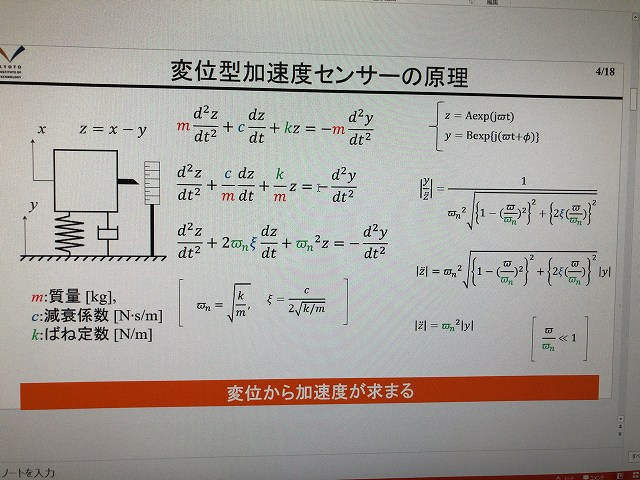
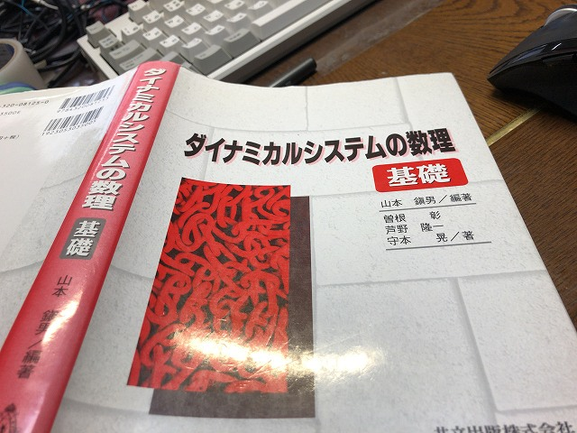
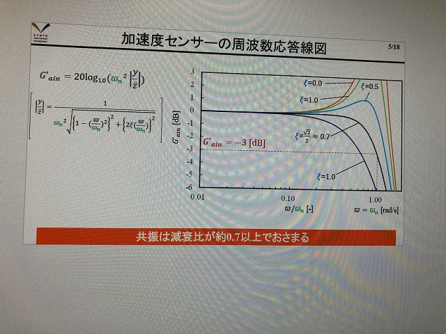
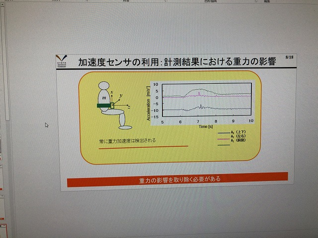
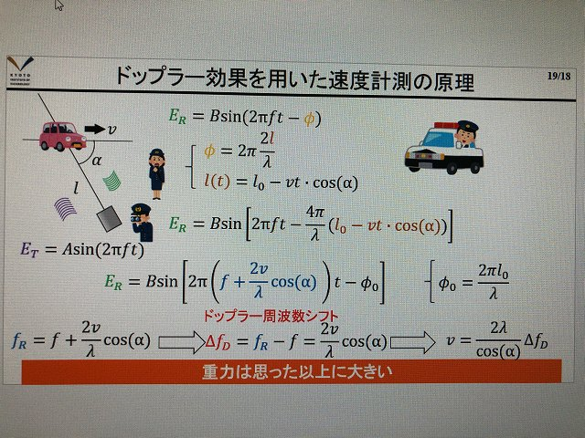
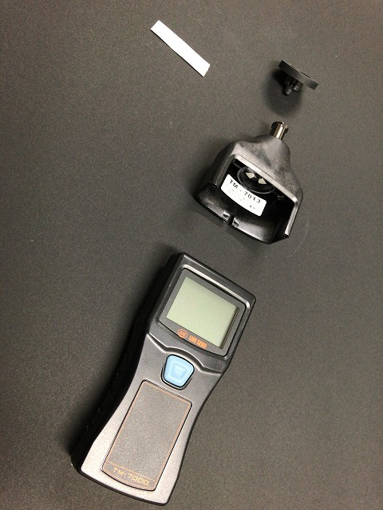
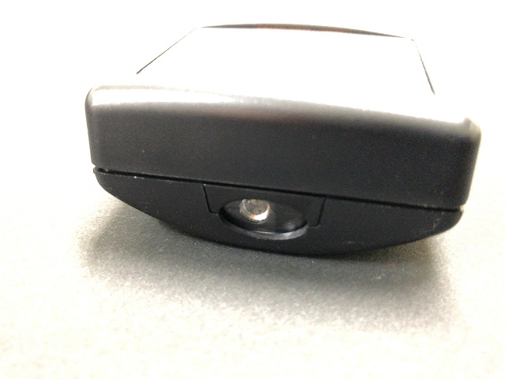
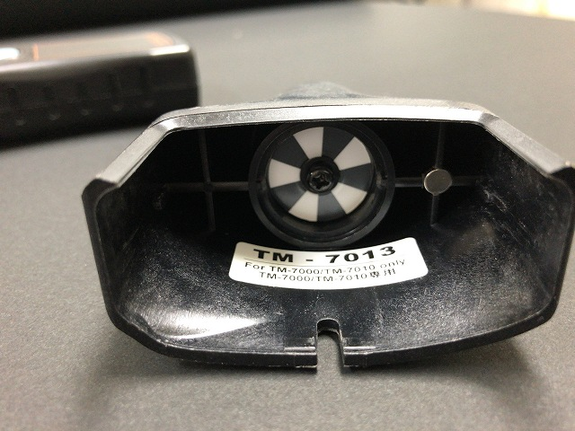
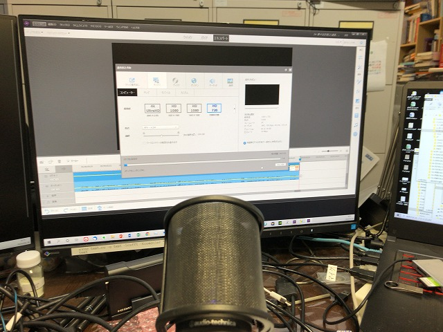

| ・ ルーチン (R02.05.16) | |||
准教授の人は毎週月曜1限までにオンライン授業の動画をアップロードするルーチンが本格化しています。早めに着手すれば！というフラグを毎週立てています。 1講義に教科書は少なくて10冊以上で多いと30冊越えます、あとは計測研の研究結果、他者の雑誌論文なども読み込んで上澄みをスライドにまとめています。 |
|||
|

あとで間違えの指摘メール来て喜んでいました |

学生時代の教科書も活躍。教科書は買っときましょう。 | ||
|

慣れないエクセルでグラフ描画 |

懐かしい研究結果 | ||
|

いらすとや活躍 |

回転計のモノ撮り | ||
|

非接触と |

接触の両用タイプ | ||
|

収録後の編集、アップロード |
夜が明けてないからセーフ | ||